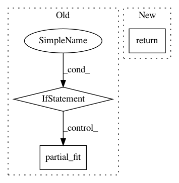

ee62faa244ca20b05d2ec0d907ea6379de18e0aa,dask_ml/wrappers.py,Incremental,fit,#Incremental#Any#Any#,343
Before Change
def fit(self, X, y=None, **fit_kwargs):
check_scoring(self.estimator, self.scoring)
if not dask.is_dask_collection(X) and not dask.is_dask_collection(y):
result = self.estimator.partial_fit(X=X, y=y, **fit_kwargs)
else:
result = fit(self.estimator, X, y, **fit_kwargs)
copy_learned_attributes(result, self.estimator)
copy_learned_attributes(result, self)
return self
def __repr__(self):
After Change
def fit(self, X, y=None, **fit_kwargs):
estimator = sklearn.base.clone(self.estimator)
return self._fit_for_estimator(estimator, X, y, **fit_kwargs)
def partial_fit(self, X, y=None, **fit_kwargs):
Fit the underlying estimator.
In pattern: SUPERPATTERN
Frequency: 3
Non-data size: 3
Instances
Project Name: dask/dask-ml
Commit Name: ee62faa244ca20b05d2ec0d907ea6379de18e0aa
Time: 2018-07-02
Author: tom.w.augspurger@gmail.com
File Name: dask_ml/wrappers.py
Class Name: Incremental
Method Name: fit
Project Name: scikit-multiflow/scikit-multiflow
Commit Name: 2b9292146fd2bf7040e7894c2e5b3ccaed7b77bf
Time: 2019-04-30
Author: jacob.montiel@gmail.com
File Name: src/skmultiflow/meta/multi_output_learner.py
Class Name: MultiOutputLearner
Method Name: partial_fit
Project Name: scikit-multiflow/scikit-multiflow
Commit Name: 25723006dbd088a24215b23242e55d06e12afd8e
Time: 2019-04-14
Author: andrecruz97@gmail.com
File Name: src/skmultiflow/meta/additive_expert_ensemble.py
Class Name: AdditiveExpertEnsemble
Method Name: partial_fit